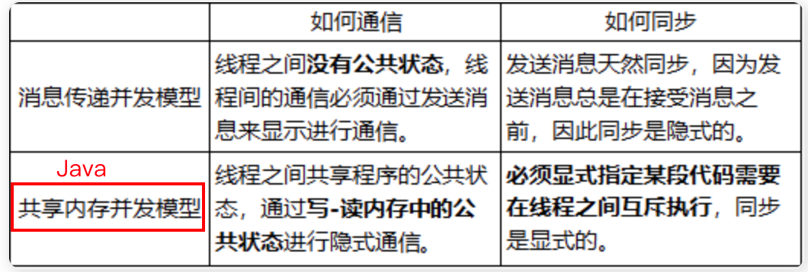
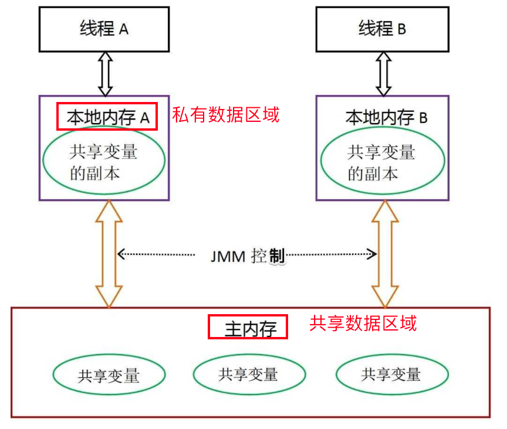
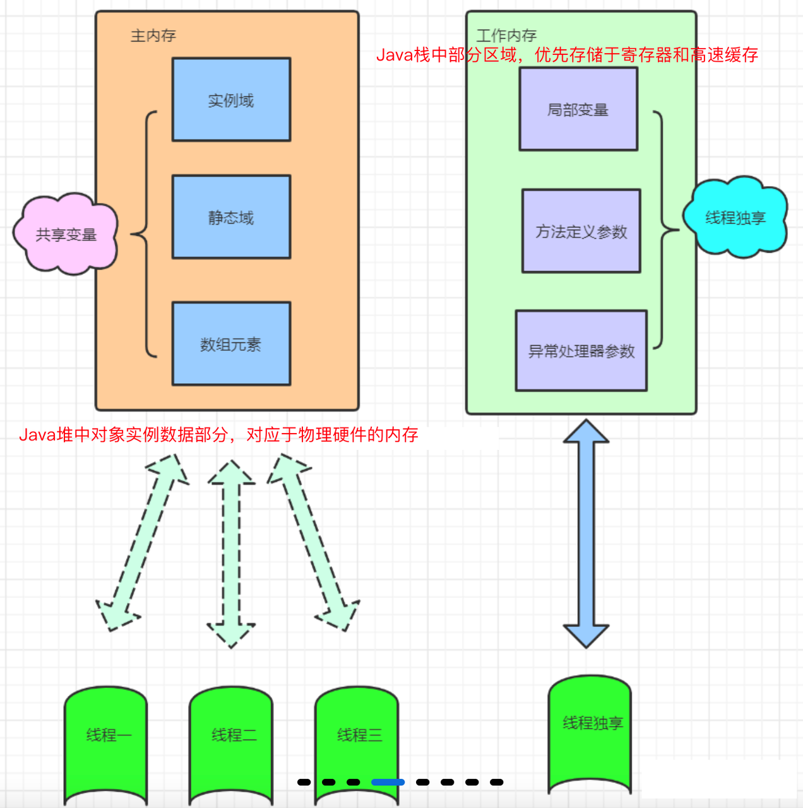
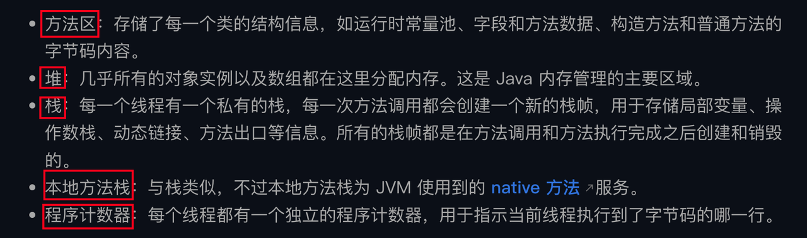
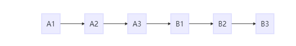
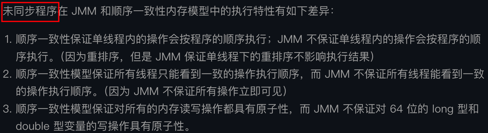
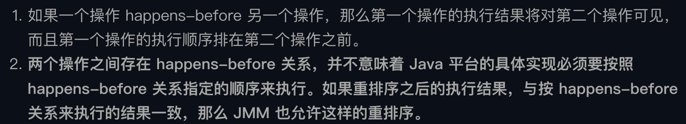
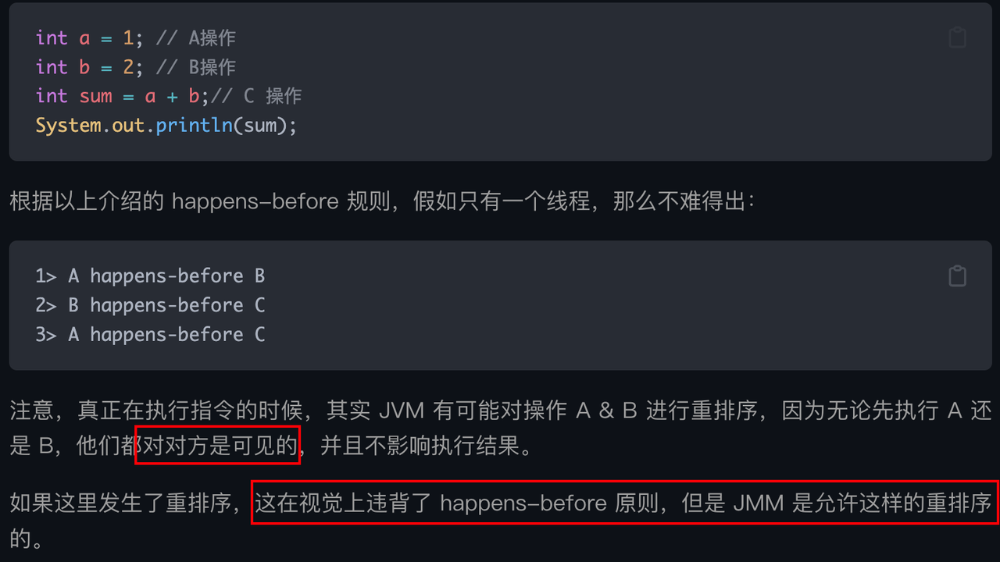

Java内存模型(JMM)
Java 内存模型（Java Memory Model，JMM）是个抽象的概念，负责 Java 并发中每个线程工作内存和共享主存之间的交互。JMM 很重要，也是后端程序员面试的重点。
Java 内存模型（Java Memory Model，JMM）是个抽象的概念，负责 Java 并发中每个线程工作内存和共享主存之间的交互。

JMM 定义了线程与主存之间的抽象关系：

线程间通信必须经过主存：① 线程 A 将本地内存 A 中更新过的共享变量刷新到主存中；② 线程 B 到主存中去读取线程 A 之前更新过的共享变量。

说到 JMM 正好复习一下跟它很像的 Java 运行时内存区域
Java 运行时内存区域描述的是在 JVM 运行时，如何具体地将内存划分为不同的区域：

JMM 意在解决 Java 多线程并发编程中主内存和工作内存之间如何安全执行操作的问题：
JMM 的指令重排
计算机在执行程序时为了性能，编译器和处理器往往会对指令进行重排序：
1 | a = b + c; |
加载完 b 和 c，可以一起把 e 和 f 都加载了，这样再去执行两个 add 操作就减少了停顿，而且对程序（串行）是无影响的。也就是说，重排序可以保证程序在串行条件下语义一致，但无法保证在多线程条件下的语义也一致。
指令重排序有三类:
编译器优化重排
处理器执行并行重排
内存系统重排
JMM 和顺序一致性模型
如果程序是正确同步的（不包含数据竞争），程序的执行将具备顺序一致性。即程序的执行结果和在顺序一致性模型（理想化的参考模型）中的执行结果相同。
正确同步：使用volatile、final、synchronized等关键字实现的正确流程下的同步。
顺序一致性模型的两大特性：
为了解释上述两大特性（假设正确使用了同步）A 线程的 3 个操作执行后释放锁，B 线程获取同一个锁。那么在顺序一致性模型中的执行效果如下所示：

就算没有正确使用同步，操作的执行整体上无序，但是对于每个线程来说都按照了程序的执行顺序，且每个线程都只能看到如下的这个执行顺序（操作立刻对所有线程可见）：
但是 JMM 中没有顺序一致性的保证。

在 JMM 中，比如当前线程 A 把写过的数据缓存在本地内存中，在没有刷新到主存之前线程 B 是对该更改不可见的，所以线程 A 和线程 B 看到的执行顺序是不同的。
JMM 中处在临界区内的代码可以发生重排序而对外部线程不可见，也就是说在不改变程序执行结果（单线程程序和正确同步了的多线程程序）的前提下提高了执行效率，为编译器和处理器的优化打开了方便。
对于未同步的线程：

JMM 提供了** happens-before 规则，保证了强内存可见性**。
可见性：当多个线程访问同一个变量时，一个线程修改了这个变量值，另一个线程能够立刻看到修改值。

也就是说，
符合 happens-before 规则，限定了操作 A 和操作 B 的理论执行顺序，就意味着内存可见性的保证。
在符合 happens-before 规则的前提下，A 和 B 可能会被 JMM 允许重排序，也可能不被允许，这取决于是否会改变程序的执行结果。
常见的符合 happens-before 关系：
同一个线程中的每一个操作
对同一个锁的解锁操作总是 happens-before 对该锁的加锁
对 volatile 修饰的变量的写总是 happens-before 对该变量的读
A -> B 且 B -> C，总是有传递性 A -> C
start 规则
join 规则

比如对上述单线程中的 A、B、C 操作，JMM 对两类重排序有不同的策略：
不会改变程序执行结果的重排序：A -> B，JMM 对编译器和处理器不做要求，允许这种重排序；
会改变程序执行结果的重排序：A -> C，JMM 要求编译器和处理器禁止这种重排序。